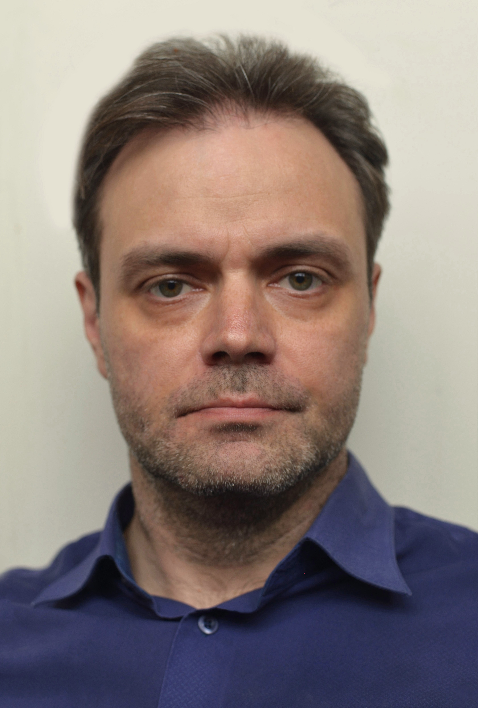

About

Honest Vision
I'm Kevin Roden, a photographer currently based in Thailand.
My work is a search for the authentic. In a world full of noise, my camera is my tool for finding clarity. I focus on decisive moments—whether it's the honest expression of a model or the silent power of a landscape.
This philosophy, "Honest Vision," guides every shot. It's a commitment to seeing the world for what it is and capturing its true, powerful essence.